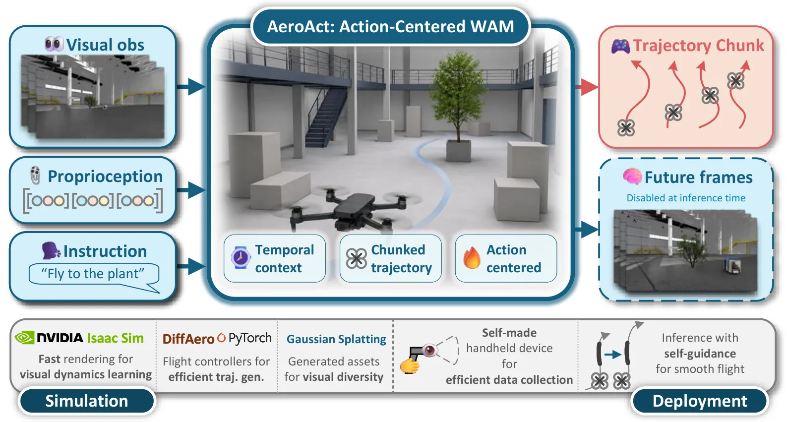
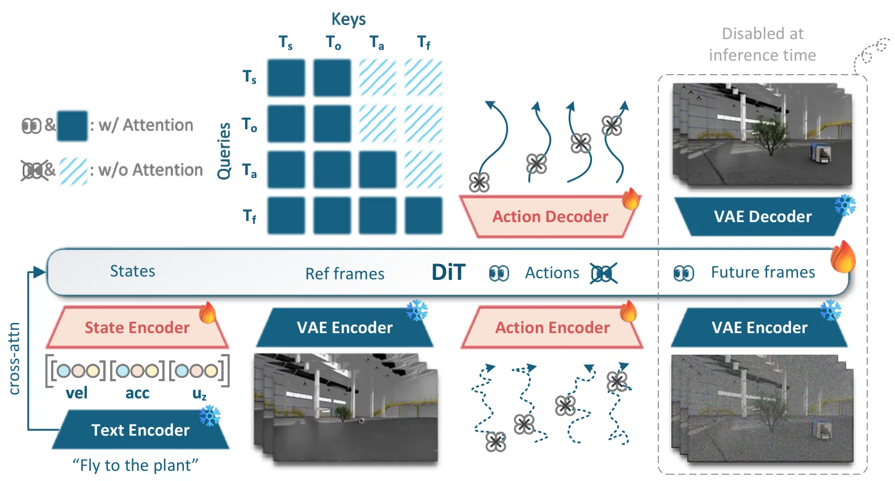
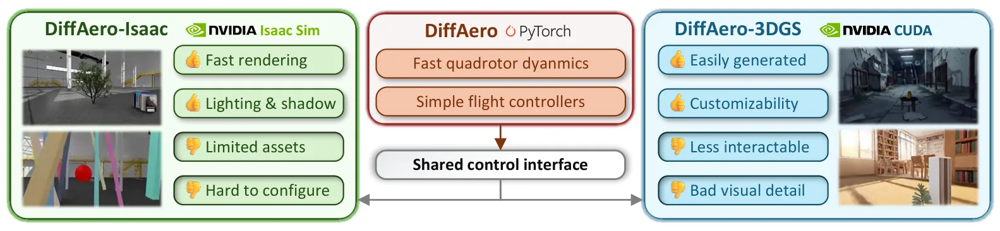
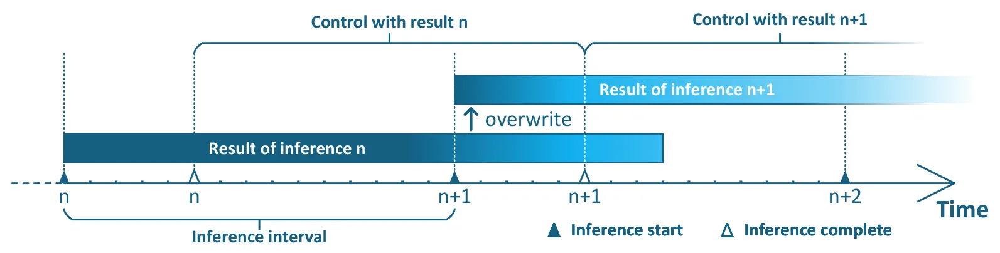
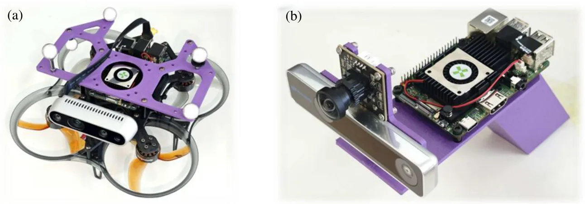
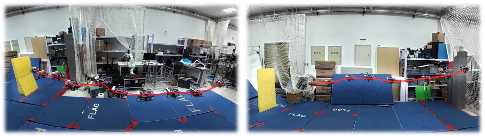
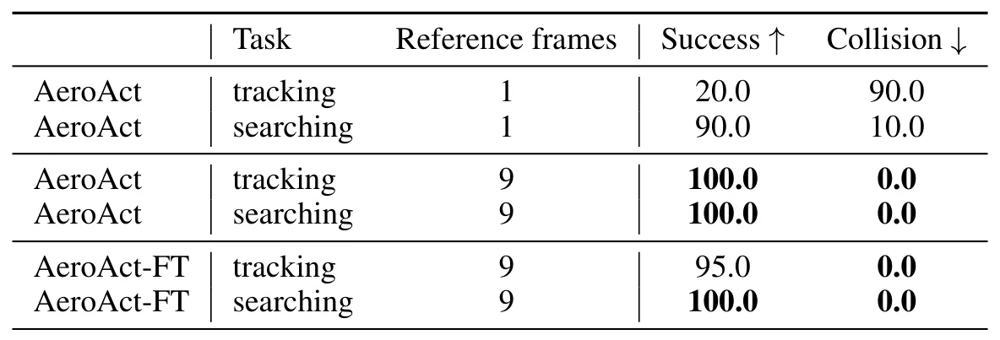
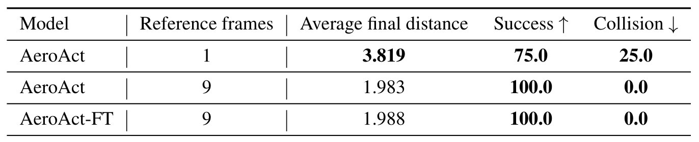

AeroAct：语言条件四旋翼的动作中心世界—动作模型AeroAct: Action-Centered World-Action Models for Language-Conditioned Quadrotor Flight
真实飞行和 3DGS 闭环仿真有旁侧参考价值，但核心是视觉语言动作策略，不提供新的 SLAM、GNSS 或里程计算法。
一句话工作总结
用未来视频监督训练语言条件飞行动作块，并借助 Isaac Lab、3DGS 和手持采集数据实现真实四旋翼闭环部署。
摘要
AeroAct 面向语言条件四旋翼导航，将预训练视频扩散 Transformer 改造为动作中心的世界—动作模型。模型根据第一视角视觉历史、本体状态和语言预测局部轨迹动作块；训练时以未来第一视角帧提供动作后果的稠密监督，部署时直接解码动作而不生成视频。作者构建结合 Isaac Lab 与 3DGS 渲染器的数据管线，并设计低成本手持采集装置和自引导机制改善重叠动作块的时间一致性。闭环仿真与真实飞行显示，时间视觉上下文有助于目标跟踪和物体搜索。
Language-conditioned quadrotor flight requires a policy to ground semantic goals, anticipate the visual consequences of ego-motion, and output control references that remain smooth and dynamically executable under rapidly changing first-person views. Existing aerial vision-language navigation and vision-language-action methods commonly use discrete actions, high-level waypoints, or instantaneous velocity commands, which provide limited supervision about how flight actions change future observations. We present AeroAct, an action-centered world-action model (WAM) for quadrotor navigation. To the best of our knowledge, AeroAct is the first WAM instantiated and demonstrated for real-world aerial flight. The model adapts a pretrained video diffusion Transformer to predict local trajectory-action chunks from egocentric visual history, proprioception, and language. Future first-person frames are used during training as dense consequence supervision, while deployment directly decodes actions without generating future video. To obtain aligned visual, state, language, and dynamically feasible action data, we build a DiffAero-based pipeline with complementary Isaac Lab and 3D Gaussian splatting renderers. We further introduce a low-cost handheld collection device that couples camera observations with motion estimates to recreate flight-like egocentric trajectories, and a self-guidance procedure that improves temporal consistency across overlapping trajectory chunks. Closed-loop simulation and real-world experiments show that temporal visual context improves target tracking and object-search performance, and that WAM-based policies can be executed on a physical quadrotor.
中文解读摘录
图表/页面预览
{kind=link}

{kind=link}

{kind=link}

{kind=link}

{kind=link}

{kind=link}

{kind=link}

{kind=link}
